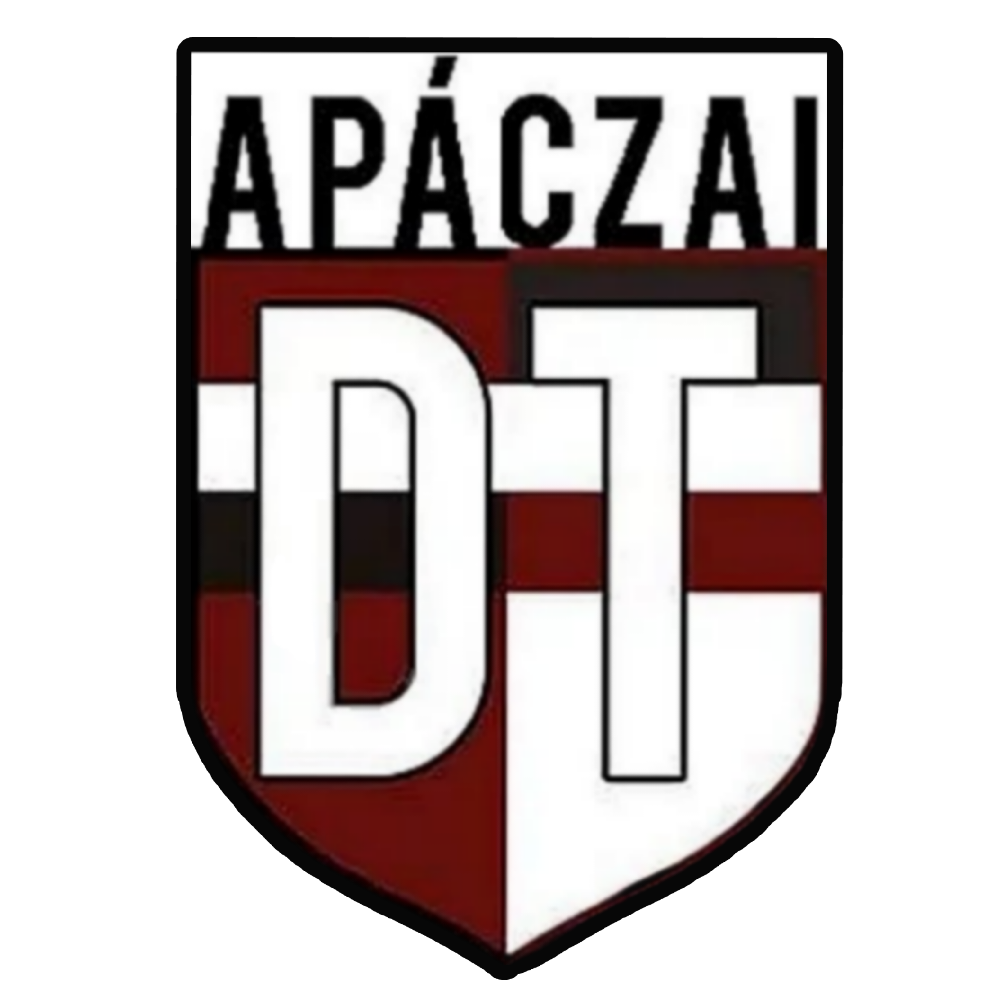

← Vissza a naptárhoz
BIZTOS (IDŐPONTÚ) ESEMÉNYEK
(upcoming)
Itt találhatóak azok a rendezvények, amelyeknek biztos-ami-biztos a dátum/időpontuk, és további információk róluk.
Ezek vannak
narancssárgával
jelölve a naptárban. :)

TÖK ÉS TEK
Ez egy tökfaragó verseny, bármely Apáczais, licis
jelentkezhet
(párral).
Hozzatok saját tököt, kést, kanalat, stb.
A nagy munka közben megy
a tekno.
Dátum
:november 6
Időpont
:16:00
Hely
:Apáczai, A07-es terem
SZÍNES HÉTFŐK
November mindegyik hétfőjén az
APDT insta
gram oldalán meghírdetett módon kell(ene) megjelenni suliba.
Csináljatok az osztállyal egy képet, ezt küldjétek el nekünk a formsban.
Az az osztály, amely a legszínesebb, legkréatívabb választja a következő színes hétfő mintáját.
Dátumok:
november 3
november 10
november 17
november 24
ADVENTI JÓTÉKONYSÁGI VÁSÁR
Minden osztály készüljön a saját termékeivel, ötleteivel, az összegyűjtött pénzösszeg egy rászoruló ember támogatására megy.
Lesz
tombola
! A nap folyamán alkalmatok lesz tombolajegyeket vásárolni.
Dátum
:december 19